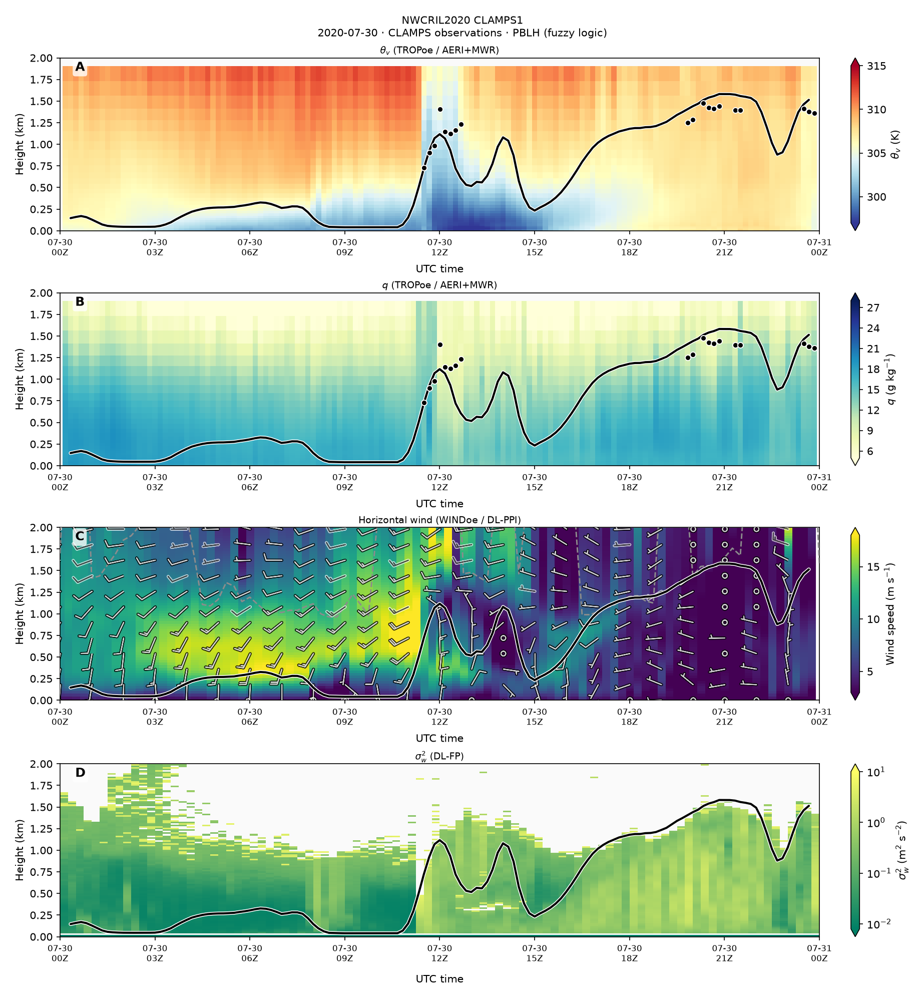

Example output
The notebook runs the same plotting code used for the case gallery site (vendored from the HPC processing pipeline). Inputs are pre-staged NetCDF files — WINDoe and fuzzy PBL are not re-computed in the notebook.

Run on Binder
Launches JupyterLab with the example data and plotting code (~1–2 min to run all cells after the environment builds).

Open notebooks/reproduce_ci_c1.ipynb on Binder
Run locally
cd case_reproduce
bash scripts/link_data.sh
python code/case_gallery/plot_instrument.py ci_c1 --forceRequires Python 3.12+, matplotlib, numpy, netCDF4, pyyaml, pandas, scipy. See README.md for a full local setup and Git LFS notes for the data bundle.